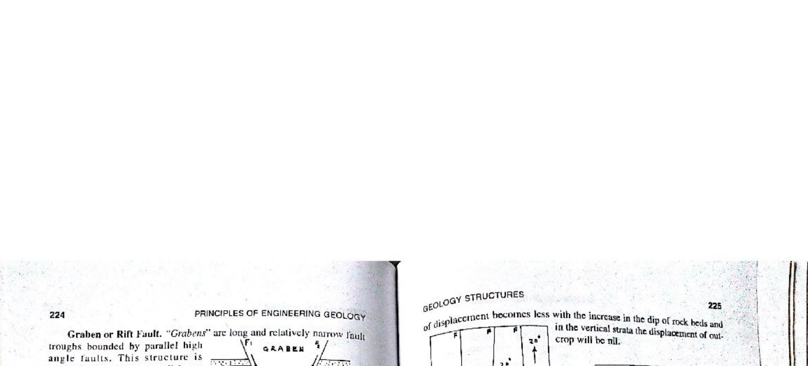

In global geotectonics and structural geology, extensional stress regimes are characterized by a stress state where the maximum principal stress is vertical ($\sigma_1 = \sigma_v = \rho g z$), while the minimum principal stress is horizontal ($\sigma_3 = \sigma_h$). Under Andersonian faulting theory, this stress configuration exclusively triggers conjugate normal faulting dipping at $\approx 60^\circ$. The pairing and spatial organization of these conjugate normal faults produces Horst and Graben structures.
As the crust stretches, conjugate normal faults tilt and rotate (domino / rollover geometry), dropping graben floors and exhuming horst basements.

| Plate Boundary Type | Stress Regime | Principal Fault Type | Diagnostic Morpho-Structural Features | Global Type Examples |
|---|---|---|---|---|
| Divergent Boundary | $\sigma_1$ vertical; $\sigma_3$ horizontal (Extension) | Normal faults | Horsts, Grabens, Half-grabens, Axial rift valleys | East African Rift, Mid-Atlantic Ridge, Rhine Graben |
| Convergent (Subduction) | $\sigma_3$ vertical; $\sigma_1$ horizontal (Compression) | Thrust / Reverse faults | Accretionary wedges, deep-sea trenches, fold belts | Cascadia, Sunda Trench, Mariana Trench |
| Convergent (Collision) | $\sigma_3$ vertical; $\sigma_1$ horizontal (Intense Shortening) | Thrust nappes, megathrusts | Fold-and-thrust belts, suture zones, crustal roots | Himalayan Orogen (MCT, MBT, MFT), Alps |
| Transform Boundary | $\sigma_2$ vertical; $\sigma_1, \sigma_3$ horizontal (Shear) | Strike-slip faults | Pull-apart basins, push-up pressure ridges, sag ponds | San Andreas Fault, Dead Sea Transform |
| Structural Element | Bounding Faults | Kinematic Symmetry | Sedimentary Architecture | Indian Geological Example |
|---|---|---|---|---|
| Graben | Two conjugate, inward-dipping normal faults | Symmetrical subsidence | Centrally thickened syn-rift strata | Narmada Rift Valley, Cambay Graben |
| Half-Graben | Single major master border fault; flexural rollover | Highly asymmetrical | Wedge-shaped strata thickening into border fault | Gondwana basins (Damodar, Godavari) |
| Horst | Two conjugate, outward-dipping normal faults | Symmetrical uplift | Condensed / absent strata; exposed basement | Satpura Mountain Range (between Narmada & Tapi) |
| Tilted Fault Block | Planar or listric normal faults | Rotational domino tilting | Fanning dip sequences (growth strata) | Offshore Krishna-Godavari extensional blocks |